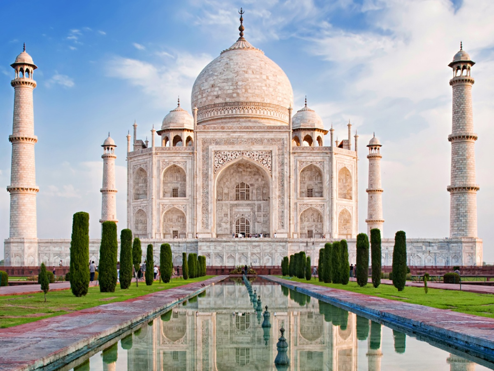
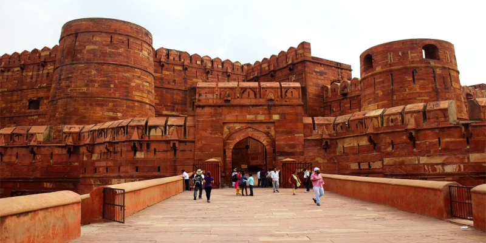
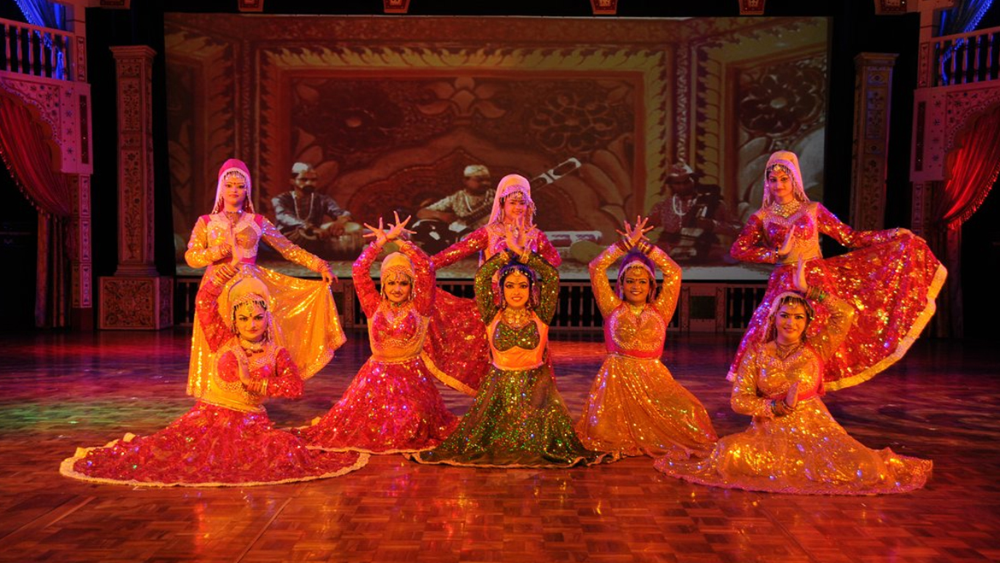
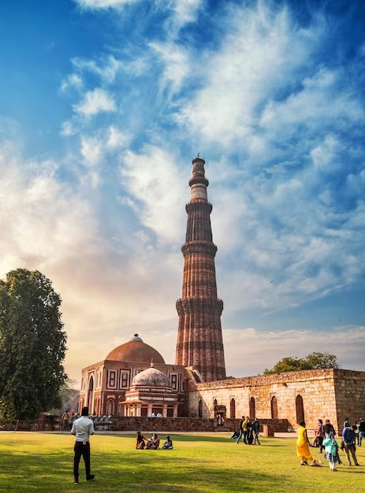
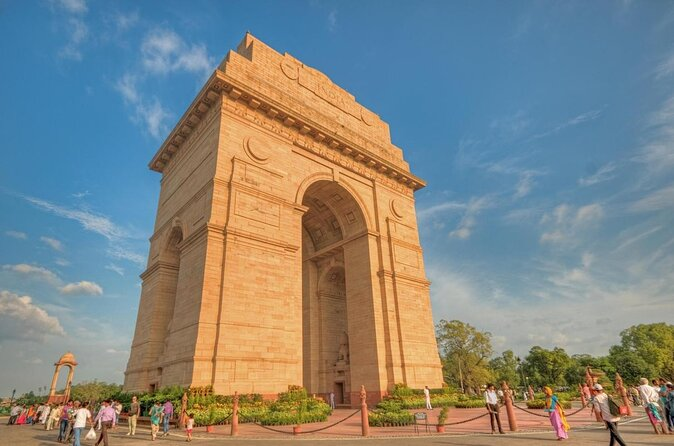
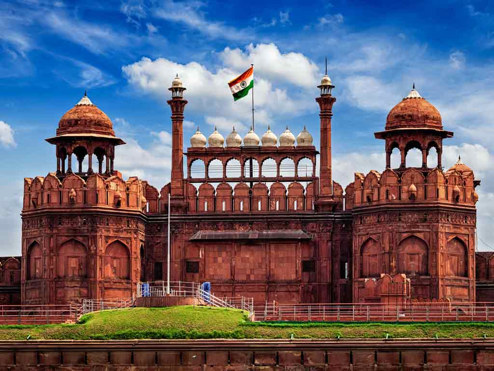
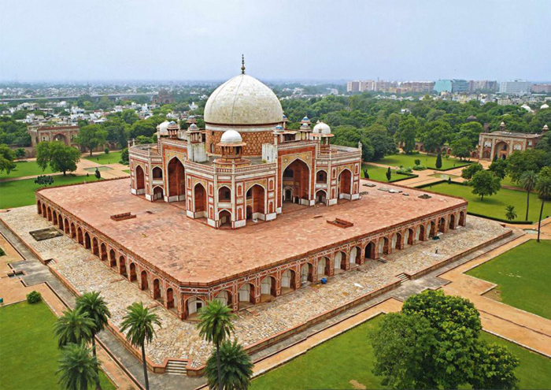
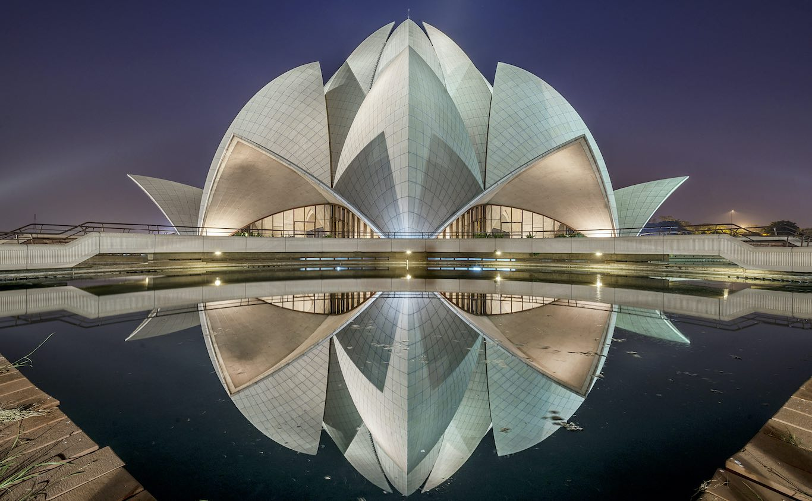

Agra, una ciudad impregnada de historia y romanticismo, es famosa en todo el mundo por albergar el majestuoso Taj Mahal,
una obra maestra arquitectónica que cautiva con su belleza atemporal y su historia de amor eterno.
Por otro lado, Nueva Delhi, la dinámica capital de la India, ofrece una fascinante combinación de historia antigua y
modernidad vibrante que hipnotiza a los visitantes con su energía contagiosa y su diversidad cultural. En esta bulliciosa
metrópolis, los antiguos monumentos y sitios históricos, como el imponente Fuerte Rojo y el impresionante Qutub Minar,
se mezclan armoniosamente con la arquitectura contemporánea, los modernos centros comerciales y la animada vida urbana.
Además, como el epicentro político, cultural y económico del país, Nueva Delhi rebosa de una variedad de experiencias,
desde la exploración de sus bulliciosos bazares y la degustación de la deliciosa cocina callejera hasta la inmersión
en su rica escena artística y cultural.
Estas dos ciudades emblemáticas, Agra y Nueva Delhi, ofrecen a los viajeros una inolvidable experiencia llena de historia,
belleza y una visión fascinante de la India en toda su grandeza y diversidad.
Atractivos turísticos en Agra
Taj Mahal

El Taj Mahal, una de las maravillas arquitectónicas del mundo, Este emblemático monumento, reconocido como una
de las Nuevas Siete Maravillas del Mundo, es un tributo al amor eterno del emperador Shah Jahan por su esposa
Mumtaz Mahal y es un símbolo perdurable de la grandeza y la magnificencia del arte islámico-mogol en la India.
Sus intrincados detalles y su belleza atemporal lo convierten en un destino imperdible.
El Fuerte de Agra

Es una imponente ciudadela de arenisca roja a orillas del río Yamuna, es un símbolo del poderío mogol.
Construido por Akbar y ampliado por sus sucesores, alberga palacios como el Khas Mahal, la mezquita Moti
Masjid y el Diwan-i-Khas, donde se recibía a dignatarios. Sus murallas de 2.5 km encierran jardines, patios
y una rica historia, siendo un tesoro arquitectónico y cultural de la India.
Wildlife SOS
Es una organización sin fines de lucro se dedica al rescate, la rehabilitación y la liberación de animales salvajes
en peligro de extinción. En su centro de Agra, podrás conocer de cerca el trabajo que realizan y ver a algunos
de los animales que han sido rescatados, como osos perezosos, leopardos, reptiles y aves. Tu visita a Wildlife SOS
no solo te brindará una experiencia educativa, sino que también te permitirá contribuir a la protección de la
fauna india.
Kalakriti Cultural & Convention Center:

El centro cultural y de convenciones Kalakriti es tu lugari deal si te apasiona la cultura pues este centro cultural,
te ofrece una amplia gama de eventos y espectáculos durante todo el año. Disfruta de bailes tradicionales,
música folclórica, obras de teatro y exposiciones de arte que te acercarán a la rica cultura de la India.
Kalakriti también cuenta con un centro de convenciones de última generación, donde se celebran eventos de talla
internacional
Atractivos turísticos en Nueva Delhi
Qutub Minar

El Qutub Minar, un impresionante minarete de ladrillos rojos y arenisca, es un símbolo emblemático de
Nueva Delhi. Construido en el siglo XII, es el minarete de ladrillos más alto del mundo y es reconocido
como Patrimonio de la Humanidad por la UNESCO.
La Puerta de la India

La Puerta de la India es un monumento conmemorativo construido en honor a los soldados indios que
murieron en la Primera Guerra Mundial y la Tercera Guerra Afgana. Es un símbolo de la independencia
de la India y un lugar importante para los eventos ceremoniales y conmemorativos.
El fuerte rojo

El Fuerte Rojo de Delhi, construido en el siglo XVII por el emperador mogol Shah Jahan, es una imponente fortaleza
de arenisca roja que se erige en el corazón de Nueva Delhi, India. Este complejo fortificado alberga una
impresionante variedad de palacios, mezquitas y salones de audiencia exquisitamente ornamentados. Esta magnífica
estructura, fusionando elementos islámicos, persas, turcos e indios, es un testimonio del esplendor y la grandeza
del imperio mogol, y atrae a visitantes de todo el mundo que desean sumergirse en la rica historia y la espléndida
arquitectura de la India.
Tumba de Humayun

Considerada una de las obras maestras de la arquitectura mogola, la Tumba de Humayun te cautivará con su elegante
diseño y su perfecta simetría. Construida por Haji Begum en el siglo XVI, esta tumba de mármol blanco alberga
los restos del emperador Humayun y es un precursor del Taj Mahal. Admira sus intrincados grabados, sus arcos y
cúpulas, y déjate llevar por la serenidad que se respira en este complejo funerario.
La Tumba de Humayun es un ejemplo excepcional de la arquitectura indoislámica y un lugar de gran belleza
Templo del Loto

Elevándose como una flor de loto sobre un estanque de agua, el Templo del Loto es un ícono de la arquitectura
moderna en Delhi que tiene un diseño único y un simbolismo espiritual. La estructura de mármol blanco, con sus
nueve pétalos curvos, representa la pureza, la unidad y la armonía. El Templo del Loto está abierto a personas
de todas las religiones y es un espacio de paz y meditación para aquellos que buscan un refugio del bullicio
de la ciudad.
Itinerario
Itinerario de 5 días y 4 noches en Agra y Nueva Delhi:
Día 1: Llegada a Nueva Delhi, exploración de La Puerta de la India y Qutub Minar
Día 2: Viaje a Agra, visita al Taj Mahal y al Fuerte de Agra
Día 3: Exploración en Wildlife SOS y espectáculo en el centro cultural Kalakriti.
Día 4: regreso a Nueva Delhi, visita al Fuerte Rojo y la Tumba de Humayun
Día 5: Recorrido por el templo del loto y Tiempo libre para compras y despedida
Costos
Alojamiento: $600
Alimentación: $400
Transporte: $150
Actividades y otros (compras, propinas, etc): $250